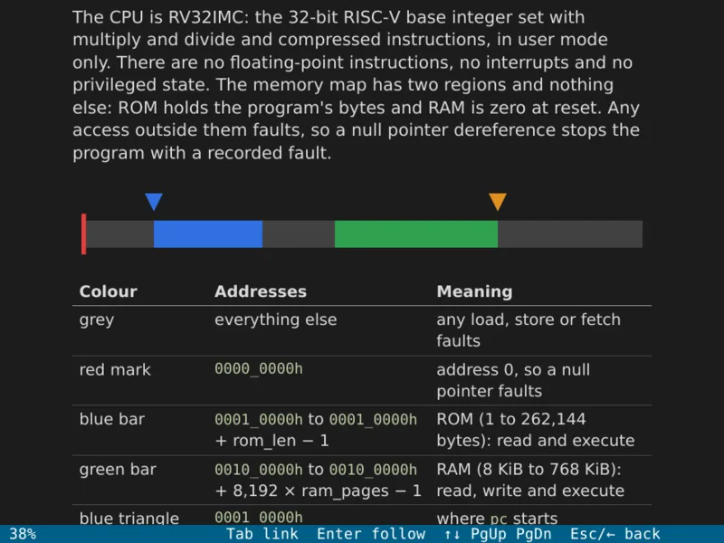

Tersenet
First and foremost, Tersenet is a way to share information: formatted text, with diagrams where they help, without the bloat of web browsers (JavaScript, ads, tracking) and without the centralised control of websites like Reddit. Secondly, and completely optionally, it can be used to share very lightweight programs, at most 1 MiB of memory each, that run on tiny isolated virtual machines.
Try it in your browser: the reader and a few articles, nothing to install.
Install on Linux or macOS:
curl -fsSL https://tersenet.org/install.sh | shDownload: Windows (zip) · macOS (zip) · Linux x86_64 · Linux ARM64 · terminal reader
Version 0.9.0. The install guide says what the script does and how to open the unsigned files.

Something to read now: the manual, itself written as Tersenet articles, the same pages the reader shows.
Download 0.9.0
Windows
- terse-0.9.0-windows-x86_64.zip
Windows 10 or newer, 64-bit
Extract all, then double-click terse-host.exe. It is not signed, so SmartScreen may say “Windows protected your PC”: click More info, then Run anyway.
macOS
- terse-0.9.0-macos.zip
macOS 11 or newer, Apple silicon and Intel
It is not notarised by Apple, so macOS blocks it the first time. Unzip it, run xattr -dr com.apple.quarantine ~/Downloads/terse-0.9.0-macos in Terminal, then double-click Terse.app. Or Control-click Terse.app and choose Open (on macOS 15: try once, then System Settings, Privacy & Security, Open Anyway).
Linux
- terse-0.9.0-linux-x86_64.tar.gz
x86_64 - terse-0.9.0-linux-aarch64.tar.gz
aarch64 (64-bit ARM)
Ubuntu 22.04, Debian 12, Fedora 36 or newer (glibc 2.35), on Wayland or X11. Unpack it with tar xzf and run terse-host, or use the install command above.
Terminal reader
- tersereader-0.9.0-linux-amd64.tar.gz
Linux x86_64 - tersereader-0.9.0-linux-arm64.tar.gz
Linux ARM 64-bit - tersereader-0.9.0-macos-amd64.tar.gz
macOS Intel - tersereader-0.9.0-macos-arm64.tar.gz
macOS Apple silicon
tersereader reads Tersenet in a terminal: one static program, nothing else to install. There is no Windows build.
Checksums
- SHA256SUMS.txt
the SHA-256 of every file above
Check a download with sha256sum -c --ignore-missing SHA256SUMS.txt (Linux), shasum -a 256 -c --ignore-missing SHA256SUMS.txt (macOS) or Get-FileHash in PowerShell (Windows).
0.9 is the first public release. It works and is tested; formats may still change before 1.0. Known limits.